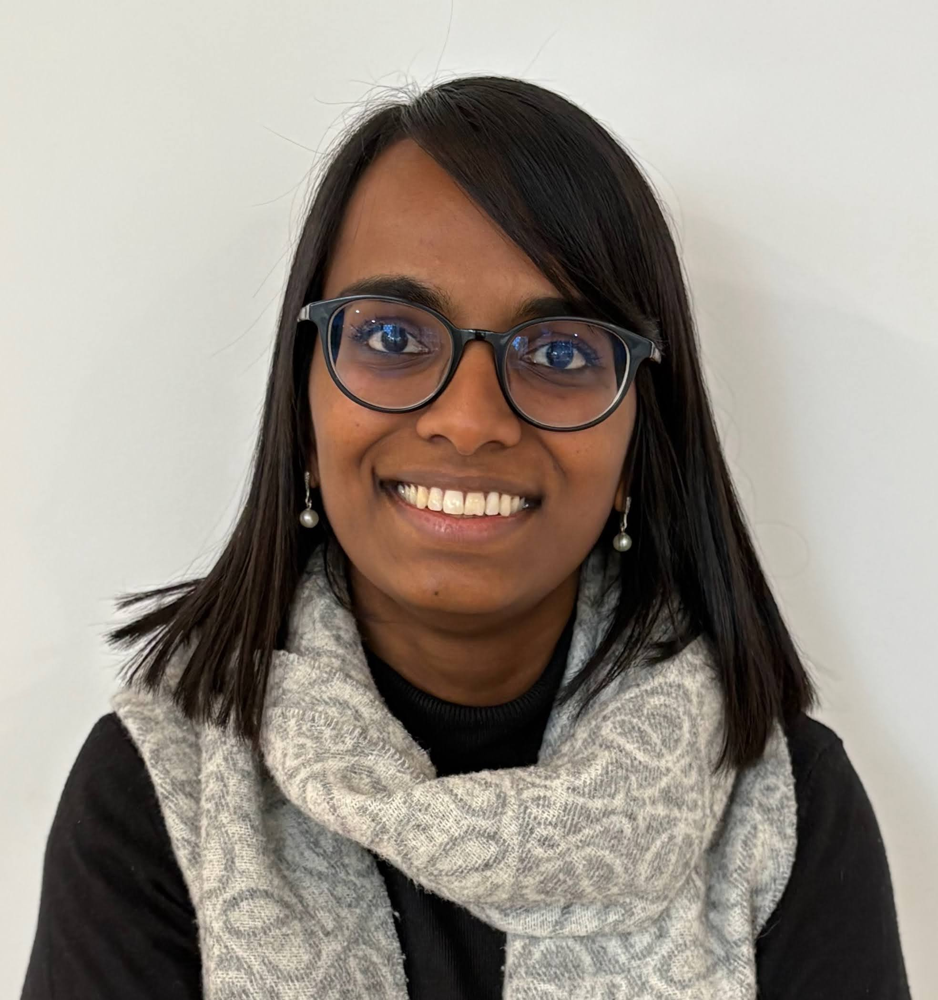

Elodie Etienne
I work at the intersection of artificial intelligence, statistics, and immersive technologies. My research studies how people communicate, and how humans and artificial agents can interact more fairly.
A mathematician working on human-centred AI
I am a postdoctoral researcher at INRIA Paris, where I work within the PEPR eNSEMBLE programme under the supervision of Prof. Chloé Clavel and Prof. Magalie Ochs. My current research investigates how bias emerges in hybrid group interactions, where humans and conversational agents collaborate, and how that bias can be observed, modelled, and mitigated. This work combines multimodal behaviour analysis with large language models, comparing real and LLM-simulated interactions to detect and quantify gender bias (ICMI'26). In summer 2026 I spent a month at the Toulouse Mathematics Institute working with Prof. Jean-Michel Loubes on the statistical foundations of this work.
I hold a Ph.D. in Management Science from HEC Liège (University of Liège), completed in 2025. My doctoral work built an analytical and pedagogical framework for public speaking training. It brought together the theoretical modelling of persuasive competencies, the design of immersive virtual reality training environments, their implementation within university curricula, and the multimodal, empirical evaluation of communicative performance.
Trained first as a mathematician, I approach human-machine interaction through the lens of data science and statistics. I care about metrics and analyses that are user-centred, explainable, and genuinely actionable. My work has been recognised with a Best Paper Award in Immersive Technologies and HEC Liège's Rising Star award, and supported by competitive funding including a €169k PEPR eNSEMBLE postdoctoral grant.
I carry out this research as a Scientific Collaborator of the University of Liège.
Three connected strands
Data Science & Artificial Intelligence
Machine learning, statistical modelling, and the analysis of multimodal data such as speech, language, and behaviour, used to understand and support human interaction.
Mathematics & Statistics
Rigorous, user-centred metrics and analyses, designed for explainability and for translating empirical findings into actionable insight.
Immersive Technologies & Human-Machine Interaction
Virtual reality, embodied conversational agents, and the perception of social and affective behaviour in immersive environments.
Background & skills

Contact
I welcome conversations about research collaborations, talks, and student supervision in human-centred AI, immersive technologies, and the measurement of communication.
Email elodie.etienne[at]inria.fr
Affiliation INRIA Paris · University of Liège
Also on Inria ALMAnaCH · University of Liège directory